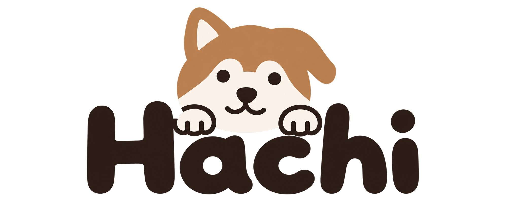
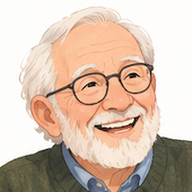
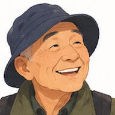
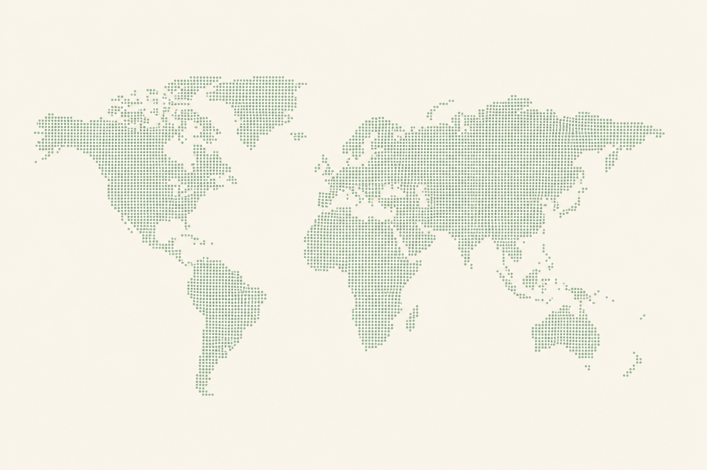

Hachi · daily check-in
Edith Carter
Calling…
Connected ·
Hachi
Edith
Hachi
Good morning, Edith! It's Hachi, calling for our daily chat. How did you sleep?
Edith
Oh, not too badly, thank you, dear. I slept right through the night.

A daily check-in call.
All you need is a phone.
Edith Carter
Michael
her son, abroad
Aiko
her care team
No app.
No account.
Just pick up.
Edith Carter
On call ·
AI assistant
Recording
Hachi
Edith
Live conversation
Hachi
How did you sleep?
Edith
Not too badly, thank you, dear. I slept right through the night.
Hachi
What did you have for breakfast?
Edith
Toast with jam, and a lovely cup of tea.
Food · ate well
What she says
How she says it
Triage queue
Open cases, most urgent first.
Today's calls
Calls placed
0
Talked
0
No answer
0
Didn't pick up today

Harold Brooks
Called twice · still on the list
Edith Carter
Review soon
Slower to answer and restarting sentences more often than usual.
In her own words · 1:15 in
“I went to get bread from the…
from the…
from the…
from the
bakery, near the station.”
Recording · staff only
Follow up within a few days
Time to answer
Seconds · each dot is one daily call
Today · 2.2 s
Usual for Edith: 0.8–1.4 s
Time to answer: clear change
Stops and restarts: clear change

Walter Hughes
On call ·
Immediate action
Hachi
Walter
Live conversation
Hachi
Good morning, Walter! How are you feeling today?
Walter
Not good. I've got a
tight pain in my chest
… and it's going down my arm.
Hachi
Walter, if you can, call an ambulance. I'm bringing your daughter and your care team onto the line, right now.
Picked up, never spoke
Another resident, this morning
Alerted
Immediate action
Possible immediate danger to life or health.
Caught during the call · 0:09
AH
Anne
· daughter
Aiko
· care team
Joined
Joined
3-way call
Michael
Edith's son
Daily calls with Edith Carter
Doing well
Talked today, 9:32 · next call tomorrow
Today's call
The last two weeks
Care team only
Recordings
Transcripts
Speech analysis
Under the hood
Real-time voice on Google Cloud
Any phone
A landline is enough
Twilio
Phone network
Cloud Run
Voice gateway
Gemini Live API
Talks in real time
Gemini
Reviews every call
Firestore
Cases and history
Staff · Family
Queue and dashboard
Monthly AI budget
routine calls pause at 90%
Emergency alerts always go through

All you need is a phone.
hachicall.web.app
All people shown are fictional.